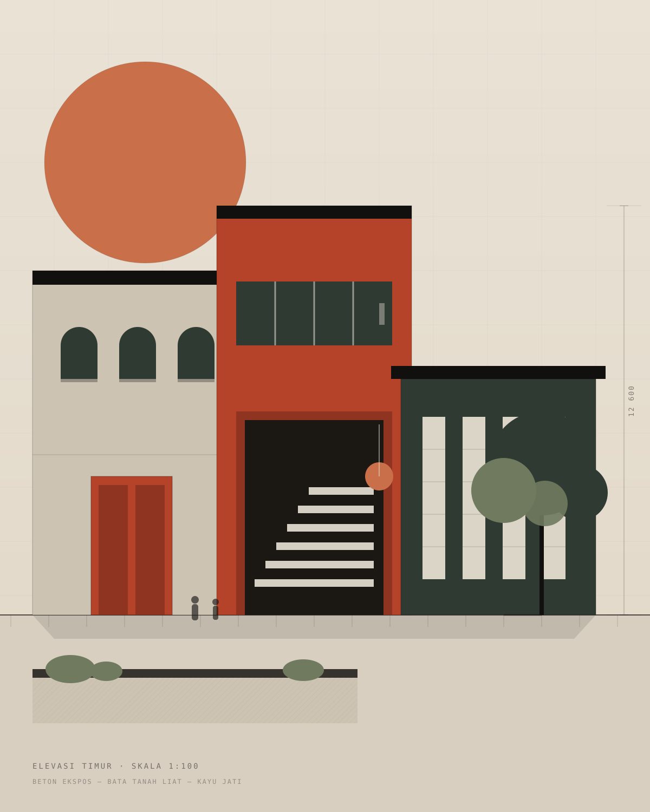

Karya / 08Ruang publik · Makassar · 2024
Terminal
Kecil
Terminal bus kecil yang tidak terasa seperti terminal — satu atap lebar, tanpa AC, dirancang untuk angin dan naungan.
- Lokasi
- Makassar
- Luas
- 1.680 m²
- Tahun
- 2024
- Peran
- Arsitektur, lanskap
- Tim
- Aria Wibowo, Bima Nugraha, Larasati Hutomo
- Status
- Selesai, beroperasi

Kota Makassar meminta terminal kecil untuk delapan jalur bus antarkota di lahan 40 × 42 meter. Anggaran terbatas; pemeliharaan mesin pendingin tidak mungkin. Kami memutuskan terminal ini tidak akan punya AC — dan menjadikan keputusan itu sebagai konsep, bukan kompromi.
Satu atap miring dari baja ringan dan polikarbonat menutupi seluruh platform. Bentuknya dipelajari dari layar perahu pinisi: miring ke selatan untuk membelokkan angin muson, lalu mengarahkannya ke bawah platform. Kolom baja diletakkan setiap 7 meter supaya bus bisa bermanuver tanpa halangan.
Penumpang menunggu di bawah atap yang sama dengan bus. Tidak ada ruang tunggu tertutup: bangku kayu disusun di sisi barat, kantin di sisi timur, toilet di belakang. Semua ruang terbuka ke platform. Bayangan atap bergerak sepanjang hari; pada siang hari, penumpang duduk di bawah bayangan, bukan di bawah lampu.
“Terminal yang baik tidak terasa seperti terminal. Ia terasa seperti pasar yang kebetulan punya bus.”
Lantai platform dibuat dari beton ekspos dengan nat 20 mm supaya air hujan cepat masuk ke saluran. Pada musim hujan, atap miring mengumpulkan air ke satu talang, lalu ke taman resapan di sisi utara.
Setelah enam bulan beroperasi, suhu di bawah atap rata-rata 3°C lebih rendah dari suhu luar pada siang hari. Kami tidak merancang angka itu. Kami merancang angin.

Proyek berikutnya
Kantor Kayu Lapis
Adaptasi ulang · Jakarta · 2021